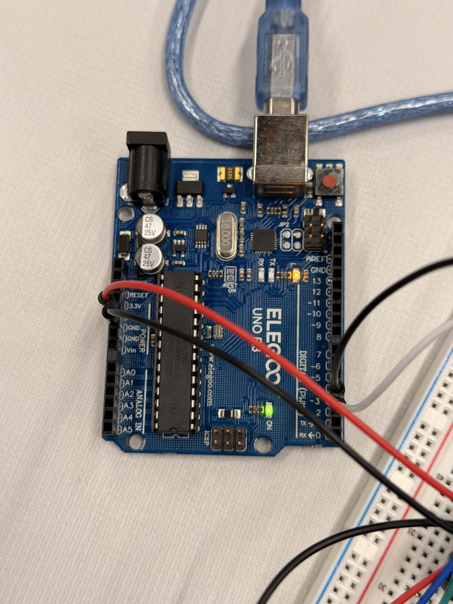
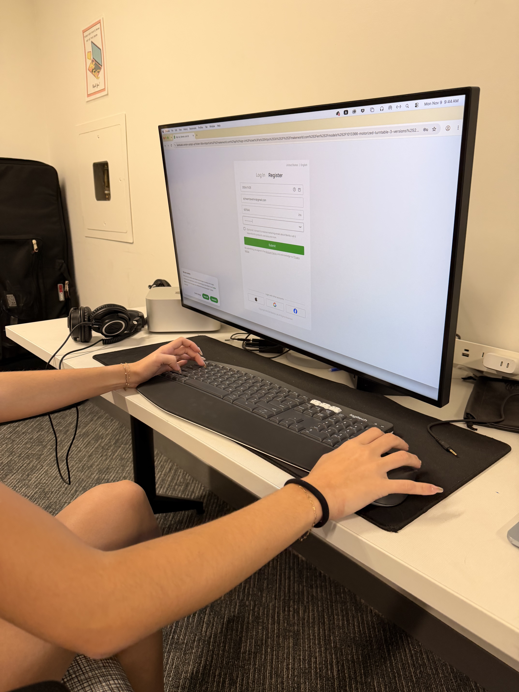
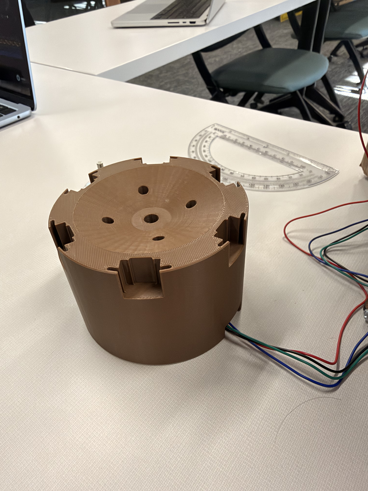
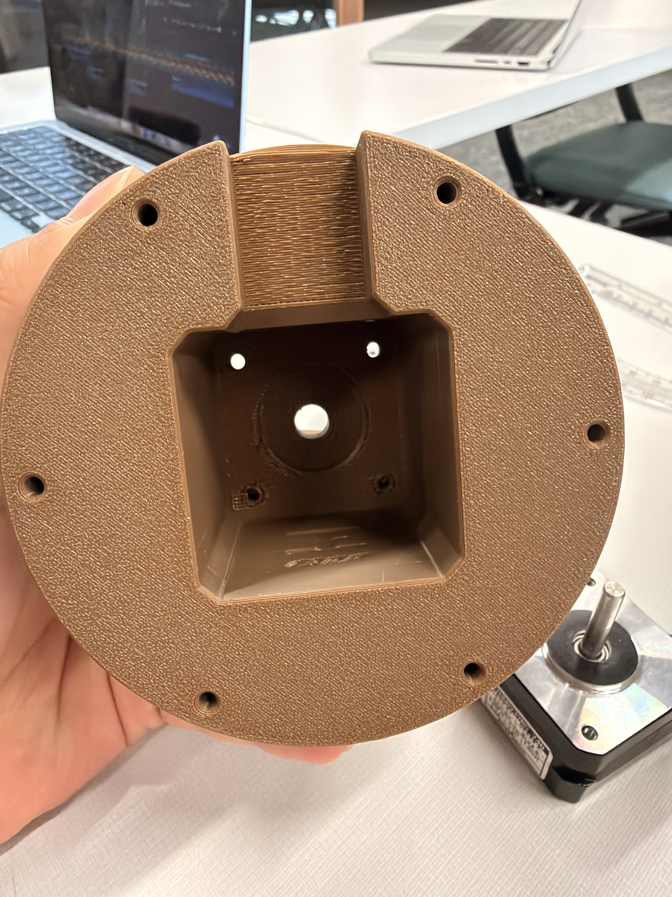
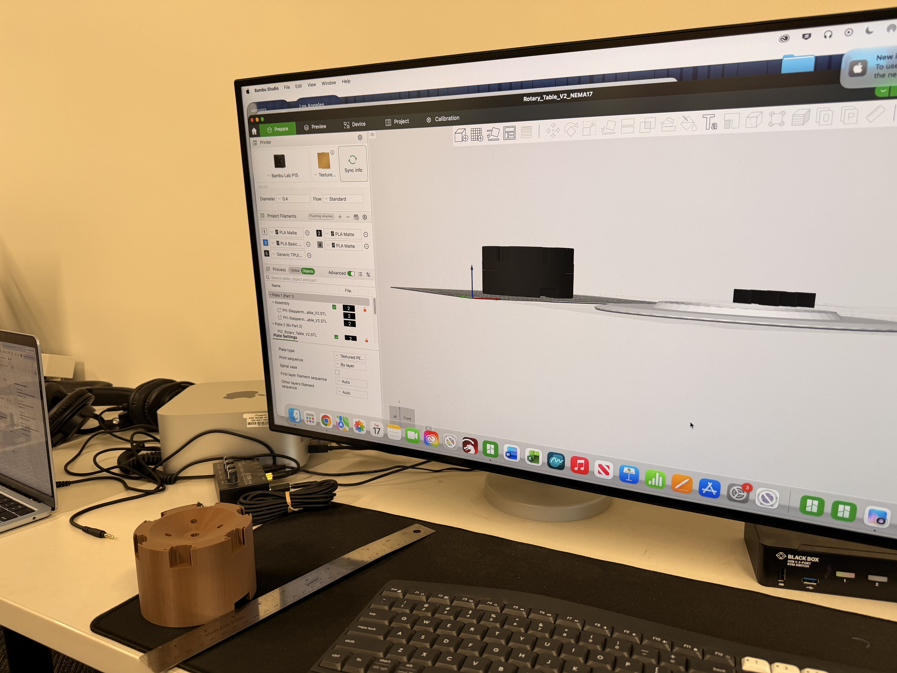
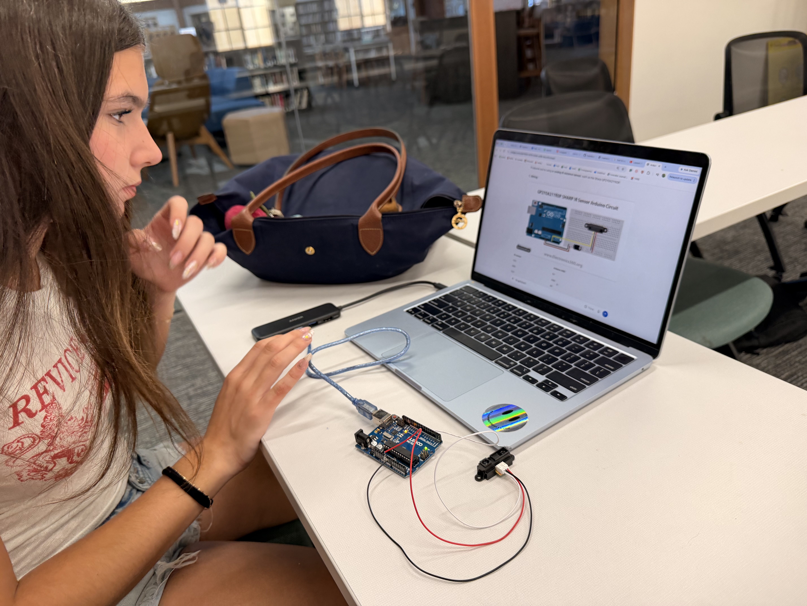
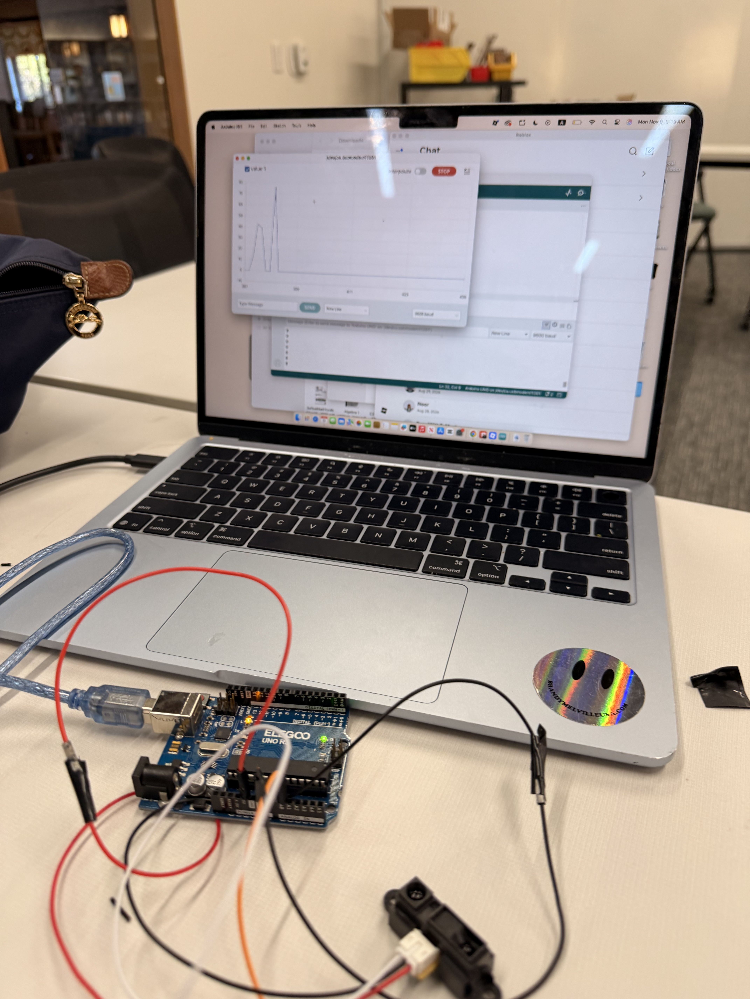
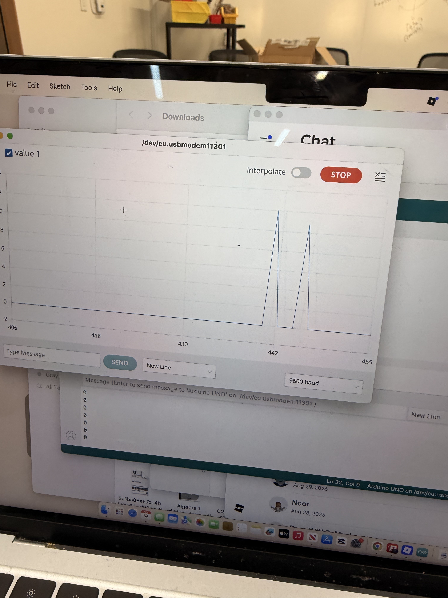
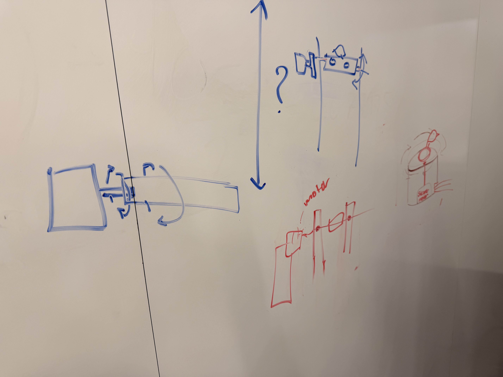
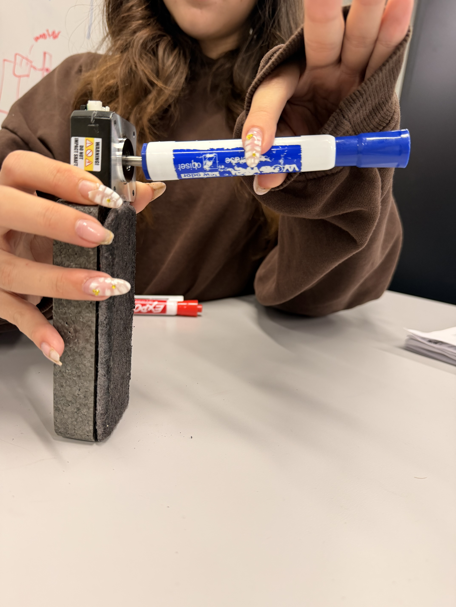

← Back to Projects
Stepper Motor and Scanner Check-In
3D Scanner Project · Progress Journal
Arduino
Stepper Motor
IR Scanner
3D Scanning
For this project, we began building the main systems for a 3D scanner.
Our progress so far includes setting up a stepper motor, wiring and
testing an infrared (IR) scanner, and planning a rotating turntable.
The overall goal is to keep the scanner in a stationary position while
rotating an object so that we can collect readings from different angles.
1. Building the Stepper Motor System
We started by assembling the stepper motor system using an Arduino,
an A4988 motor driver, a breadboard, and a NEMA 17 stepper motor.
Getting the wiring and driver settings correct took some trial and error.

01 — Initial Wiring
We began reconstructing the stepper motor setup and connecting
the motor driver. One challenge was calibrating the driver using
its potentiometer. We had difficulty adjusting it with a
screwdriver, but after some trial and error, we got it working.

02 — Arduino Connections
We continued wiring the Arduino so it could communicate with
the stepper motor driver. This step was important because the
Arduino would send the signals needed to control the motor's
movement.

03 — Motor Driver Setup
This shows our nearly completed setup, with the Arduino,
breadboard, driver, and stepper motor connected. The motor had
four differently colored wires that we had to match to the
correct connections. We switched the wires around until the
motor worked properly.

04 — Creating the Motor Code
We uploaded our wiring diagram and setup to AI and asked it
to generate code that matched our actual pin connections.
This helped us create a starting point for controlling the
stepper motor. We needed the code to match the physical wiring
so that the correct signals would reach the motor driver.

05 — Working Stepper Motor
After adjusting the wiring and code, we got the complete
stepper motor setup working. The Arduino was able to send
signals through the A4988 driver to control the motor's
rotation. This gave us a working foundation for the next
part of the project.
2. Planning and Building the Rotating Turntable

06 — Choosing a Design
We started brainstorming how to move an object so the IR
scanner could collect readings from different angles. We
visited the robotics room and looked at John Deng's model,
which used a conveyor belt to move an object. This inspired
our first idea, but we eventually decided that a conveyor
belt would not be practical for our design. Instead, we
chose to explore a rotating table powered by our stepper
motor, allowing the object to rotate while the scanner
stays stationary.

12 — Finding a Turntable Model
We went into Studio A to look through existing models and
find one that could fit our stepper motor. This was the
beginning of figuring out how to physically connect the
motor to a turntable that could rotate an object.

14 — 3D Printing the Turntable Base
Ava and I 3D printed a base for our turntable that would
connect to our stepper motor and allow it to rotate. We
plan to place an object on top of the platform while
keeping the IR scanner stationary, allowing the motor to
rotate the object so the scanner can collect readings
from all sides. This was an important step because we
were finally turning our original design idea into a
physical component. Instead of having to move the scanner
around the object, we are creating a system where the
object rotates, hopefully making the scanning process
more consistent and efficient.

15 — Discovering a Design Issue
When we examined the bottom of the turntable, where the
stepper motor was supposed to fit, we realized that the
opening was too large for our motor. The original 3D model
had been designed for a longer motor than the one we were
using, so our stepper motor did not fit correctly into the
base. This showed us that even though a 3D model might
look like it would work, we still needed to consider the
exact dimensions of our physical components. We would need
to adjust the design or find a better-fitting model before
we could properly attach the motor and get the turntable
rotating.

16 — Resizing, Printing, and Testing the Turntable
To fix the sizing issue, we opened the model in Bambu Studio
and manually measured the dimensions we needed so the base
would fit our stepper motor. We used AI and YouTube tutorials
to learn how to resize and modify the 3D model, then adjusted
it to better match our motor. After making the changes, we
sent the updated base and the other turntable components to
print using two different 3D printers. Unfortunately, one
of the printers experienced a nozzle issue, which prevented
some of our parts from printing successfully. Luckily, the
printer making our redesigned base and actual turntable
platform worked, so we were still able to get the most
important components. We also powered the turntable to test
its movement, but it rotated shakily and scraped against
the base. We realized that because some of the supporting
components had not printed, the assembly was missing pieces
that were supposed to help it function properly. This showed
us that the individual printed parts needed to work together
as a complete assembly, and we would need to finish printing
the missing components before the turntable could operate
more smoothly.
3. Wiring and Testing the IR Scanner
After getting the motor working, we moved on to setting up the
infrared scanner. We followed a wiring guide and adapted the
scanner's original wires so they could connect to our Arduino.

07 — Scanner Wiring
Ava and I followed a guide to begin wiring the IR scanner.
We used the guide to understand how the scanner needed to
connect to the rest of our Arduino setup.

08 — Preparing the Wires
The scanner's original wires needed to be adapted so they
could fit into the Arduino pins. We manually stripped the
wires and joined them to additional wires. At first, we
used electrical tape to hold the connections together.

09 — Scanner Setup
This shows the completed initial wiring for the IR scanner.
With the connections in place, we could begin testing the
scanner and checking whether it was producing readings.

10 — Initial Scanner Readings
We began testing the scanner and looking at the readings
it produced. This helped us check whether the sensor was
communicating with our setup and collecting data.

11 — Testing and Calibration
We continued checking the scanner's readings and working
on calibration. Comparing the readings during testing
helped us understand how the scanner was responding and
what adjustments might be needed.

13 — Improving the Wire Connections
We realized that the electrical tape was not holding the
joined scanner wires securely enough. To improve the
connection, we switched to crimping the wires instead.
This created a stronger hold and made the wiring more
reliable.
4. Planning the Scanner's Movement
Once we had started developing the turntable and scanner separately,
we also needed to figure out how the scanner itself would move.
We began sketching and modeling a possible mechanism for scanning
an object from different heights and angles.

17 — Designing the Scanner's Movement
Although we didn't have enough time to fully develop the IR
scanner system, we still had two more class periods to
continue working on it, so we focused on planning how the
scanner would move. We settled on a design where a second
stepper motor would rotate a pole with the IR scanner
attached, allowing it to sweep up and down while scanning
the object. For this system to work accurately, we would
need to know the exact angle of the scanner at each position
so our software could calculate distances and eventually
plot the measurements correctly. We also created a rough
physical model using available objects to visualize how
the mechanism would work in three dimensions. Dr. Dzula's
guidance and Matthew's project helped inspire this movement
design. Moving forward, we plan to develop this mechanism,
finish printing the turntable components, and improve its
rotation so that both systems can work together to scan
an object from multiple angles.

18 — Visualizing the Mechanism in 3D
Although we didn't have enough time to fully develop the IR
scanner system, we still had two more class periods to
continue working on it, so we focused on planning how the
scanner would move. We settled on a design where a second
stepper motor would rotate a pole with the IR scanner
attached, allowing it to sweep up and down while scanning
the object. For this system to work accurately, we would
need to know the exact angle of the scanner at each position
so our software could calculate distances and eventually
plot the measurements correctly. We also created a rough
physical model using available objects to visualize how
the mechanism would work in three dimensions. Dr. Dzula's
guidance and Matthew's project helped inspire this movement
design. Moving forward, we plan to develop this mechanism,
finish printing the turntable components, and improve its
rotation so that both systems can work together to scan
an object from multiple angles.
5. Troubleshooting and Reflection
So far, one of the biggest challenges has been getting all of
the electrical connections to work correctly. The stepper
motor required us to experiment with its wiring and calibrate
the driver before it worked. We also had to adapt the IR
scanner's original wires to fit our Arduino setup.
We learned that getting a project to work is not just about
following a diagram. Small details in wiring, connections,
measurements, and calibration can make a big difference.
For example, switching from electrical tape to crimping gave
us a more secure scanner connection.
We also changed our original design idea after considering
how practical it would be. Instead of using a conveyor belt,
we decided to investigate a rotating turntable powered by
our stepper motor. This should allow us to scan an object
from different angles without moving the scanner itself.
Building the turntable introduced another set of challenges.
We had to resize the original 3D model to fit our motor, and
one of the printers had a nozzle issue that prevented some
of our parts from printing. When we tested the turntable
without all of its supporting components, it moved shakily
and scraped against the base. This showed us how important
it is for every part of the design to fit and function together.
We have also started planning how the IR scanner will move
vertically using a second stepper motor and a rotating pole.
One important part of this design will be tracking the exact
angle of the scanner so that our software can use the readings
to calculate distances and eventually create a 3D plot.
Our next goal is to finish printing and assembling the turntable,
improve its rotation, and begin developing the scanner movement
mechanism. We still have work to do before the full system is
complete, but we now have a clearer idea of how the separate
components will work together.